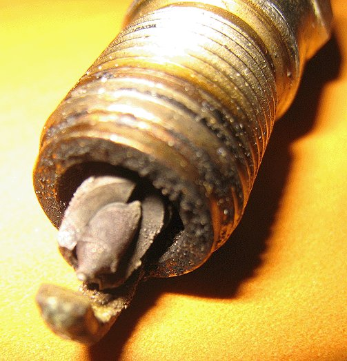

Engine/Engine Controls - MIL ON, Engine Running Rough/DTC P0300
TECHNICALBulletin No.: 12-06-01-001B
Date: June 01, 2012
Subject: Service Engine Soon Light On, Rough Running Engine, Cracked or Oil Fouled # 1 and/or 7 Spark Plug
Models:
2007-2011 Cadillac Escalade, Escalade ESV, Escalade EXT
2007-2011 Chevrolet Avalanche, Express, Silverado 1500, Suburban, Tahoe
2007-2011 GMC Savana, Sierra 1500, Sierra Denali, Yukon, Yukon XL, Yukon Denali, Yukon Denali XL
Equipped with Gen IV V8 Engines
Built Prior to February 1, 2011
Supercede:
This bulletin is being revised to update the Parts Information to remove a part number. Please discard Corporate Bulletin Number 12-06-01-001A (Section 06 - Engine/Propulsion System).
Condition
Some customers may comment on a service engine soon light being on and/or rough running engine. Technicians may find DTC P0300 set. Upon further investigation, technicians may find cylinder #1 and #7 spark plugs oil fouled and/or the porcelain may be cracked or broken on the combustion chamber side.
Cause

This occurs on the driver's side (left side) of the engine due to PCV pullover that adds additional oil to the cylinders that can foul out or damage the spark plugs.
Correction
Important
If Corporate Bulletin Number 10-06-01-008C has been previously performed, then a new valve cover may not need to be installed. Please look for the second design baffle with the square hole at the end of the baffle.
Install a new left valve cover with the revised baffle to prevent PCV pullover that adds additional oil to the cylinders.
(1) Old Design
(2) New Design
Inspect cylinder #1 and #7 spark plugs for damage and replace if necessary.
Parts Information
Warranty Information
For vehicles repaired under warranty, use the table.

Disclaimer